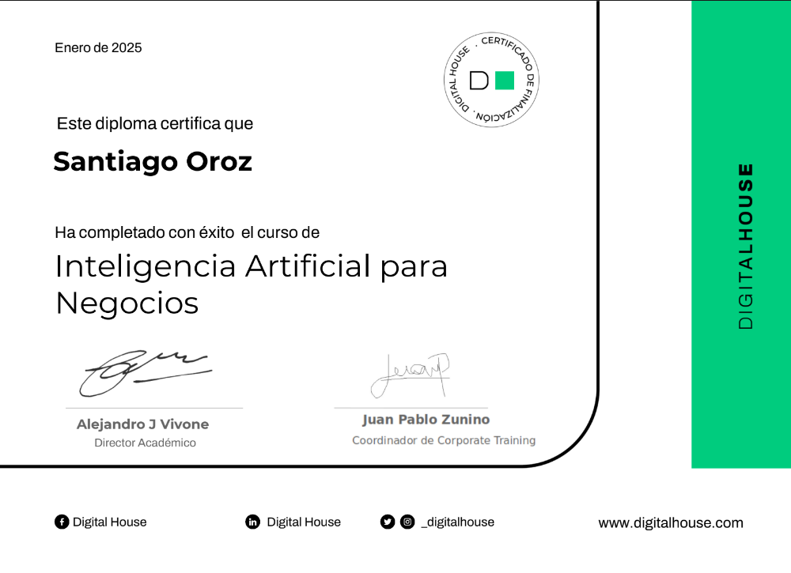
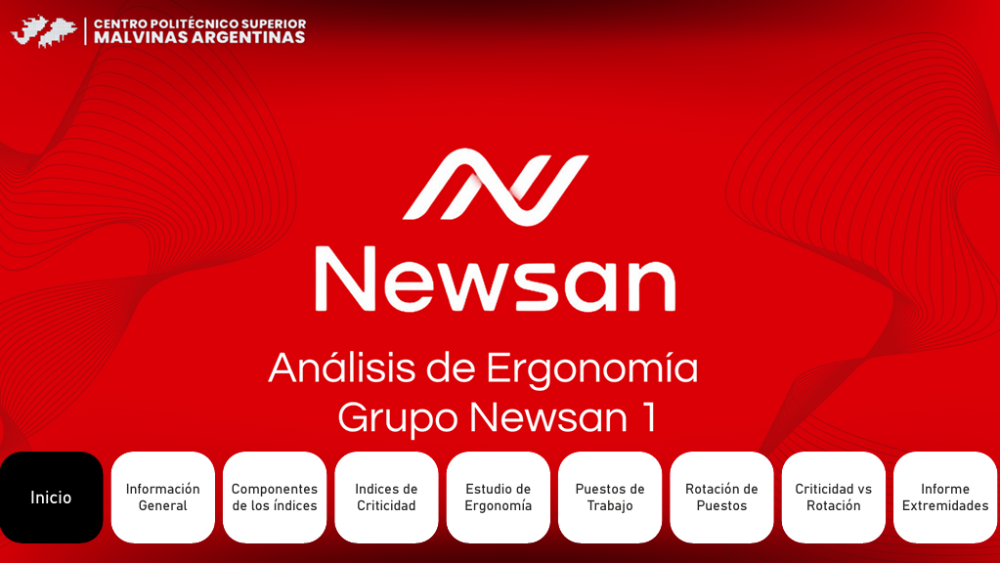

Programador | Científico de Datos | Creativo
Apasionado por la ciencia de datos. Me encanta transformar datos en información útil para la toma de decisiones estratégicas. Mi área de interés principal es la Inteligencia Artificial. Siempre buscando nuevos desafíos y aprendiendo cosas nuevas.
Técnico en Ciencia de Datos e IA (2024 - Actualidad)
Digital House · 2024 - 2025
2024 - 2025
Reportes de análisis ergonómico en PowerBI
Trabajo en equipo de 5 personas
Santiago.Oroz1510@gmail.com
+54 2964 543015
@santyoroz15
@santyoroz